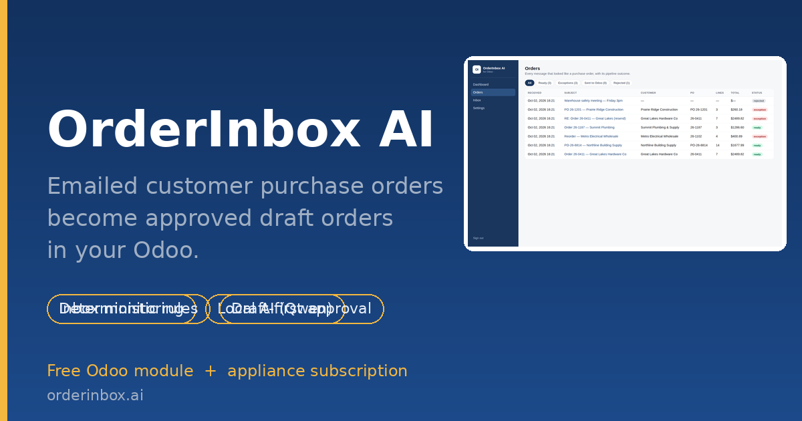
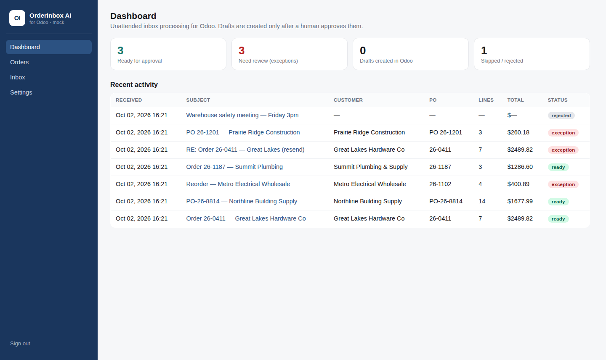
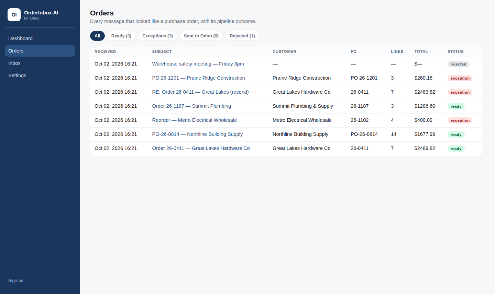
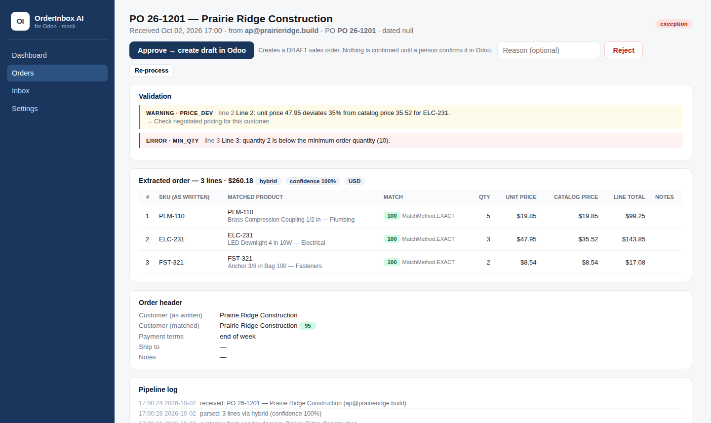
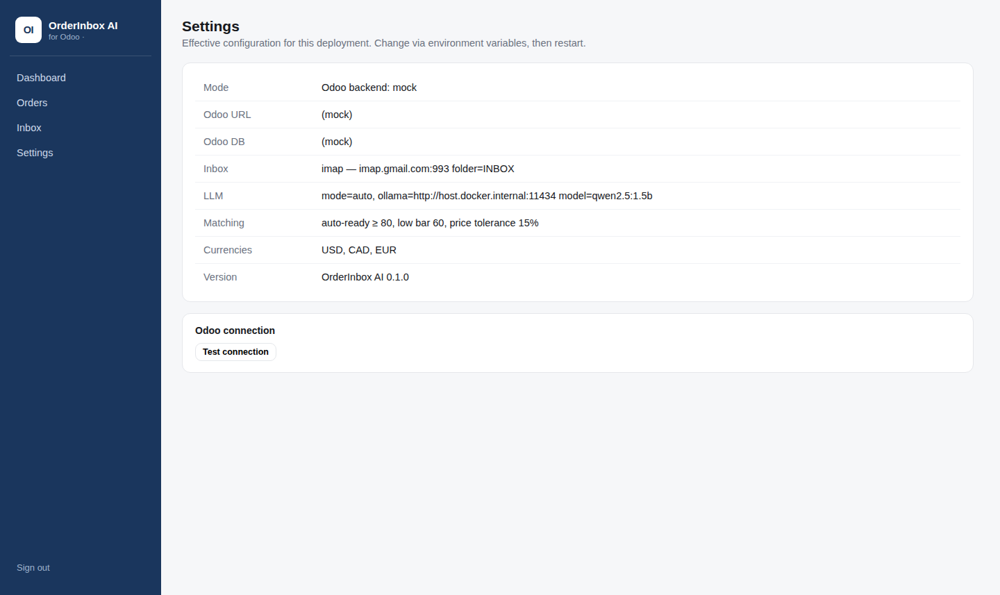

OrderInbox AI is the in-Odoo review queue for customer purchase orders that arrive by email. The companion OrderInbox appliance watches your orders inbox, reads every PO in any format (PDF, Excel, CSV, plain email), matches the customer and every SKU against your live Odoo catalog, and validates quantities, prices, pack sizes and duplicates — then pushes the results here for a one-click decision.
Draft-first, by design: approving creates a draft sales order in your Odoo. Nothing is confirmed until your team posts it, the normal way.
sale.order from the matched lines (customer, PO reference, quantities, quoted prices)/orderinbox/syncThe review console (appliance side) — the same data appears in Odoo via this module:
 Dashboard: ready / exception / rejected counts |
 Order list with match scores and totals |
 Exception detail: the issue, the suggested fix, every line's match |
 Effective configuration |
The heavy lifting (inbox monitoring, document extraction, local LLM inference, deterministic validation) runs in the OrderInbox appliance — a Docker container on your own network. Documents never leave your infrastructure. This module is the face inside Odoo:
Customer email ──▶ OrderInbox appliance (Docker)
• watches the inbox (IMAP)
• reads PDF / XLSX / CSV / email
• matches customer + SKUs vs live Odoo catalog
• validates: packs, min order, prices, duplicates
• local LLM (Qwen via Ollama) only where tables can't help
│
│ token-authenticated sync (every 5 min)
▼
This module — kanban review queue in Odoo
│
human approves ▼
draft sale.order in Odoo (you post it)
orderinbox).orderinbox-ai) and point it at your Odoo:
ODOO_MODE=live ODOO_URL=… ODOO_DB=… ODOO_USERNAME=… ODOO_PASSWORD=…
plus the orders mailbox (IMAP_* or Gmail).ORDERINBOX_API_TOKEN on the appliance and enter the same token in
Settings → OrderInbox along with the appliance URL
(e.g. http://appliance.lan:8501)./orderinbox/sync endpoint and approve them in Odoo.
License: LGPL-3 · Support: support@orderinbox.ai · Source